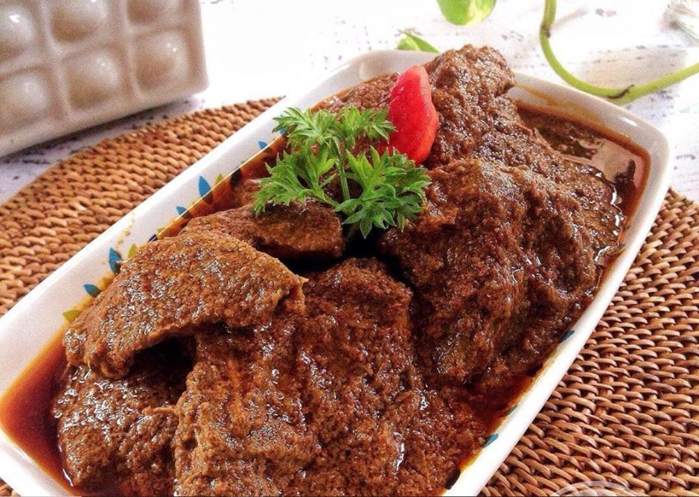

Resep Bakso Kuah Nikmat

Keterampilan membuat bakso adalah satu hal yang mungkin tidak dimiliki kebanyakan para penggemar masak. Padahal dengan membuatnya sendiri, kita melatih keterampilan membuat banyak hal lainnya seperti contohnya patty burger sendiri dan lain sebagainya. Tidak hanya itu, dengan membuat bakso sendiri berarti seluruh prosesnya lebih higienis dan ada formula yang kita ciptakan sendiri sesuai kesukaan. Sementara resep kuah bakso pastinya bisa dibuat lebih lezat berkat bumbu bakso kuah dari Royco Kaldu Sapi.
Seberapa sering kita menikmati olahan daging sapi? Dengan formula sendiri ini, kita mengetahui komposisi dagingnya, rasanya, hingga teksturnya. Tentunya yang istimewa adalah ketika bakso terasa lebih kenyal namun juga memiliki rasa daging dan cita rasa yang lezat. Semoga resep bakso kali ini cocok bagi teman-teman sekalian yang selama ini ingin tahu cara membuat bakso dan juga kuahnya yang lezat.
Bahan-bahan
BAHAN
- 700 g daging sapi, giling
- 2 butir telur ayam, ambil putihnya
- 150 g es batu
- ½ sdt soda kue
- 2 sdt Royco Kaldu Sapi
- ½ bungkus agar-agar tanpa rasa
- 300 g daging ayam, giling
- 2 siung bawang putih
- 100 g tepung tapioka
- 1 sdt merica putih bubuk
- 1 sdt gula pasir
- 2 sdt bawang merah goreng
BAHAN UNTUK KUAH
- 2 L air
- ½ sdt merica putih bubuk
- 1 sdt gula pasir
- 1 sdm bawang merah goreng
- 1 sdm Royco Kaldu Sapi
- 2 batang daun bawang
- 2 siung bawang putih, cincang halus
Cara Membuat (Video)
Cara Membuat (Step By Step)
1.Haluskan daging sapi, ayam, putih telur, bawang putih, bawang goreng, dan es batu dengan food processor sampai benar-benar halus.
2.Masukkan tapioka, soda kue, merica, Royco Kaldu Sapi, gula, dan agar-agar. Aduk rata menggunakan sendok, sampai semua tercampur rata. Simpan dalam kulkas minimal 30 menit.
3.Didihkan air di panci. Bentuk daging bakso menjadi bulat, lalu masukkan ke dalam air mendidih. Rebus hingga bakso matang. Siap disajikan.
4.Angkat bakso dan sajikan bersama kuah kaldu sapi.
Lihat Juga
Resep Rendang
Resep Nasi Mawut

Resep Rendang
Resep Nasi Mawut
Resep Rendang
Resep Nasi Mawut